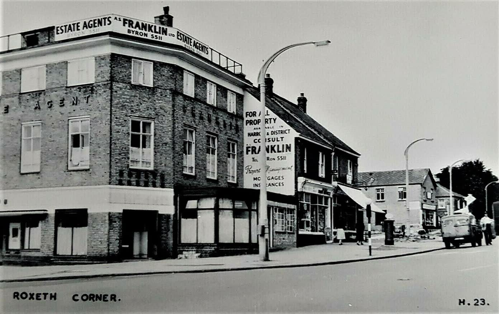
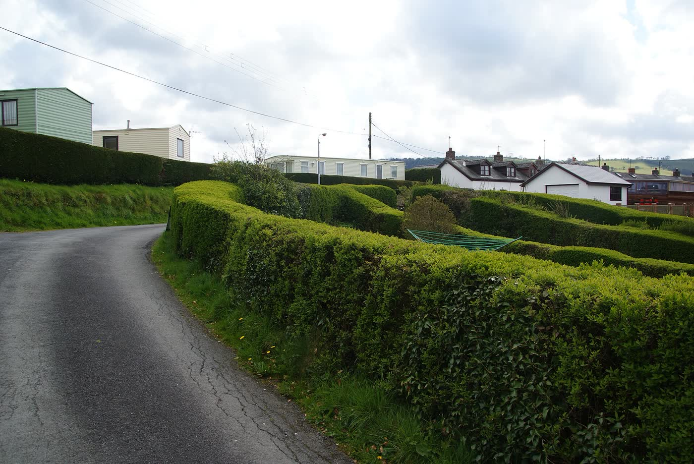
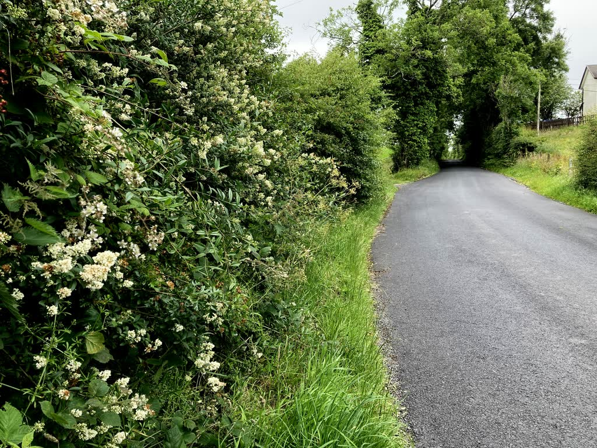
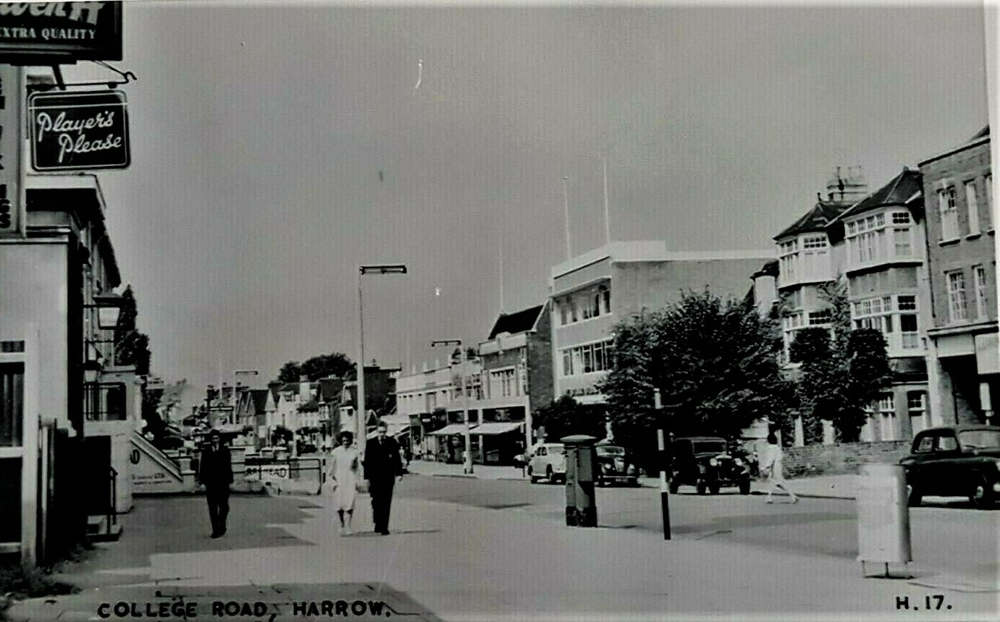
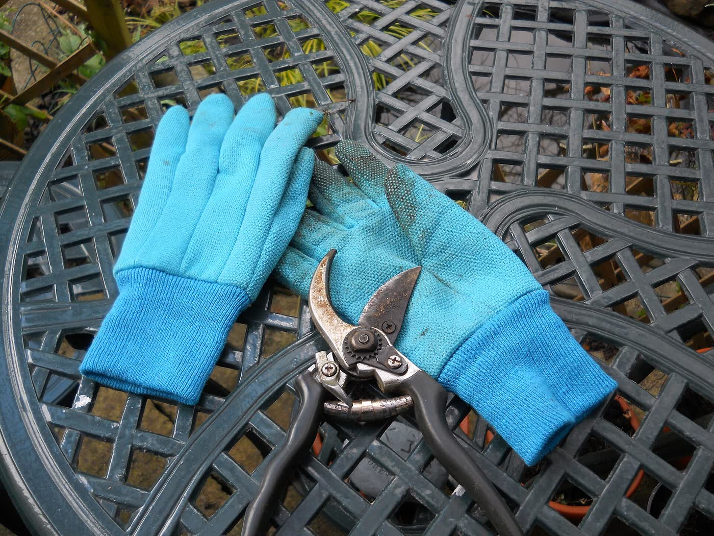

Vyas
Gardening in Harrow since September 2014. Bhavik comes to look, then quotes. No price list is published.

One van, then a full kit
He started on his own with a small three-door Nissan Micra, doing tidy-ups nearby. The kit is bigger now, and he works with specialists when a job needs them.
4.9 from 28 reviews on Which? Trusted Traders.

The work

Looking after a garden
Maintenance, mowing, lawn treatment, hedge trimming, leaves, planting and weeds.

Clearing it
Garden clearance, and snow clearance when it is needed.

Shaping it
Landscaping, features, sheds, drainage, fences, decking, patios, driveways, turf and ponds.

Trees, surfaces, waste
Crown pruning through to taking out roots. Pressure washing. Household and commercial waste taken away.